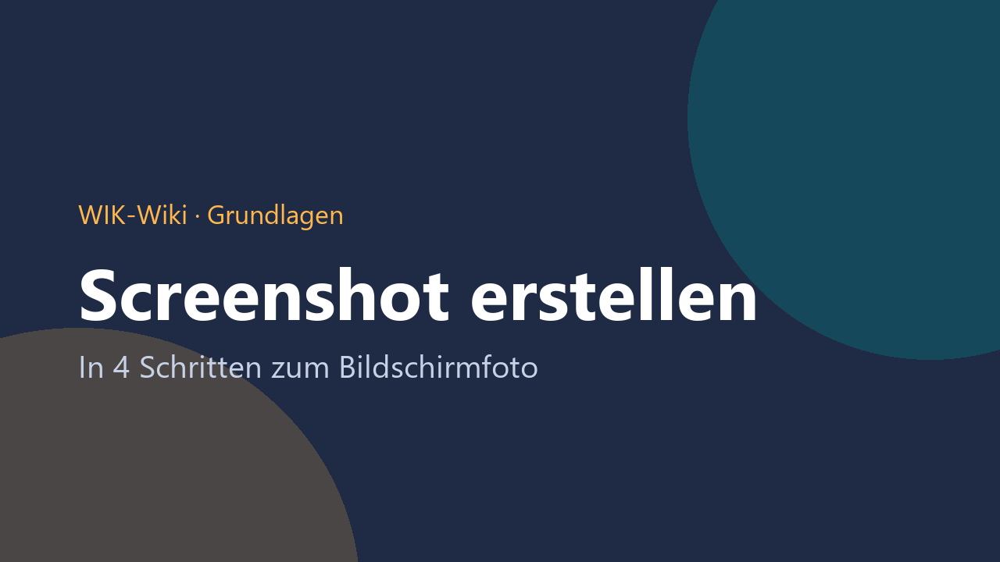

Willkommen im WIK-Wiki
Das Nachschlagewerk der Klasse 10M. Hier sammeln wir Anleitungen und Erklärvideos zu Word, Excel, PowerPoint, Gestaltung und Kommunikation. Geschrieben von uns, für uns.
3 Artikel · 9 offene Themen
Artikel des Tages

Screenshot erstellen
Mit Win + Shift + S einen Ausschnitt des Bildschirms aufnehmen und in ein Dokument einfügen. Weiterlesen …
Offene Themen
Diese Seiten gibt es noch nicht. Such dir eins aus und schreib den Artikel:
Bereiche
- Grundlagen 3 Seiten
- Word noch leer
- Excel noch leer
- PowerPoint noch leer
- Gestaltung noch leer
- Kommunikation noch leer
So machst du mit
- Thema wählen und in die Liste eintragen
- Video-Planung schreiben: Thema, Was muss rein?
- Erklärvideo aufnehmen und schneiden
- Wiki-Seite schreiben und in Teams hochladen
- Ein anderes Paar prüft den Artikel (Diskussion)